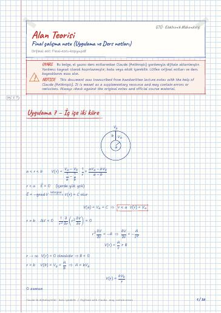

Electromagnetic Field Theory · Digital lecture note
Final study note (recitation and lecture notes)
Elektromanyetik Alan Teorisi – Final çalışma notu (Uygulama ve Ders notları)
- Course
- Electromagnetic Field Theory (ELM341)
- Semester
- Semester 5 · Fall 2023–24
- Format
- PDF · 36 pages · 0.6 MB · handwriting-style LaTeX
- Language
- Turkish
- Original note
- Final-notu-kopya.pdf
Open the PDF (0.6 MB)LaTeX source (.tex)Original handwritten note

What is in this note?
Section headings of the note (in Turkish):
- Uygulama 7 – İç içe iki küre
- Ders 9 – Değişik türden yük dağılımları ve Dirac Distribüsyonu
- δ(x)'in özellikleri
- Uygulama 8 – sayfa 43
- Ders 10
- Ders 11 – Yüzeysel yüke etki eden kuvvet
- Sayfa 55 problem 1
- Uygulama 9 – Görüntü Teorisi
- Ders 12
- 2.5.2 Dipol Dağılımları
- Ders 13
- Boş uzayda
- Boş olmayan ortam
- Görüntü kavramı ve yöntemi
- Kapasite problemi
- Bir kürenin kapasitesi
Text of the note
Show as plain text (Turkish; formulas and drawings are not included)
Uygulama 7 – İç içe iki küre
a<r<b yüzeyindeki yüke etkiyen kuvvet??
Ders 9 – Değişik türden yük dağılımları ve Dirac Distribüsyonu
_s(y,z) x=0 'da _s(y,z) [C/m^2] yük yoğunluğu olsun; bu yüzeysel yük yoğunluğuna ilişkin hacimsel yük yoğunluğu:
a≤ x≤ b, c≤ y≤ d, e≤ z≤ f prizması içindeki toplam yük
r=b içinClaude notu: Orijinalde bu satırlardaki bazı b çarpanları sadeleştirme için çizilmiştir (sayfa 2'nin sol sütununda birkaç yerde).
x=0 'da süreksizlik var
x=0 'da bir süreksizlik olsun
V 'nin süreksizliği herhangi bir S yüzeyi üzerinde olsaydı
x=0 'da süreksizliği olan E(x,y,z) için
Genel durumda bir S yüzeyinde süreksizlik varsa:
Süreksizlik x=0 yerine x=h 'da olursa
Bir C eğrisi S_1 ve S_2 yüzeylerinin arakesiti olsun. C üzerinde bulunan _c [C/m] için hacimsel yük yoğunluğu
S_1: x=a da süreksiz ise noktasal yükü için hacimsel yük yoğunluğu
x=0 ve x=d düzlemleri iletken olsunlar ve, sırasıyla V_0 ve V_d potansiyellerine sahip bulunsunlar. Bu düzlemler arasındaki bölge, permitivitesi ε olan bir madde ile dolu olsun ve kaynakları içermesin. Bu bölge içinde potansiyel fonksiyonunu ve iletkenlerin üzerinde, birim alanda toplanan yükleri bulunuz. x=d düzleminde birim alanda toplanan yük Q_d ile gösterildiği takdirde, C=Q_d/(V_d-V_0) ı hesaplayınız (aşağıdaki şekle bak).
O zaman Ara bölgede:
düzlemler iletken olduğundan kapattığı bölgenin içinde olan elektrik alanı dışarıya geçirmez.Claude notu: Orijinalde ε_3E_n^(3) terimi turuncu kalemle çizilmiş ve yanına turuncu bir daire ( 0 ) konmuştur; kırmızı not bu terimi açıklıyor.
Silindirik koordinatlarda olursa silindirik koordinatlardaki uzunluk ^2=(x-x_0)^2+(y-y_0)^2 olmak üzere
Regüler bir S yüzeyi tarafından kuşatılmış bir iletken cismin dışında V potansiyel fonksiyonu biliniyor olsun. Cismin dışındaki ortam değişik dielektrik malzemelerle dolu ise, S üzerinde toplanan yükün
ile bulunabileceğini gösteriniz. Burada n , S in dışına yönelmiş normal, ε ise dış ortamın dielektrik sabitidir.
iletkenlerin sadece yüzeyinde yük birikir
R yarıçaplı iletken küre üzerinde potansiyel V_0 dır. Küre üzerindeki Q yükünü ve C=Q/V_0 ı hesaplayınız.
küre iletken olduğu için içinde yük birikmez, içerde Δ V=0
yük dağılımı sonlu ise sadece o bölgede geçerli olur.
Ders 11 – Yüzeysel yüke etki eden kuvvet
q_1… q_n tane yük olsun
q_1 yüküne etki eden kuvvet
P noktasına etki eden kuvveti hesaplayalım. S_μ küresi dışında bulunan bütün yükleri içerdeki birim yüke etki kuvvet Elektrik Alan. Bu kuvvet hesaplayıp μ→0 'a götürülürse P noktasındaki elektrik alanı buluruz.
Boşlukta bulunan, R yarıçaplı, sonsuz uzun iletken bir silindir, yüklenerek, =1 yüzeyi üzerindeki noktalara göre V_0 potansiyeline çıkarılmıştır. Silindirin birim uzunluktaki parçası üzerinde toplanan Q yükünü ve C=Q/V_0 ı hesaplayınız.
Q yükünü taşıyan a yarıçaplı çok küçük bir iletken küre, şekilde gösterildiği gibi, bir küresel oyuğun içine yerleştirilmiştir. Oyuğun çeperini oluşturan malzeme iletkendir ve önceden elektrikle yüklenmiş değildir.
Oyuk içinde yaratılan alanı bulunuz.
Küresel kabuğun iç ve dış yüzeylerinde toplanan elektrik yüklerini hesaplayınız.
Kabuğun dışında yaratılan alanı yazınız.
Küçük küre kabuğun iç çeperine yaklaştırılıp dokunduruluyor ve oyuktan çıkarılıyor. Meydana gelen olayları anlatınız.
Küçük küre yeniden Q yükü ile yüklenip oyuğa sokulsa, yukarıda a, b, c, d de sözü edilen sonuçlar nasıl değişir?
Şimdi yüklerin bir regüle S yüzeyi üzerine _s yoğunluğu ile dağılmış bulunduklarını düşünelim ve S in üzerindeki bir P noktasında birim yüke etki eden E(P) kuvvetini hesaplamaya çalışalım.
P noktası üzerindeki elektrik alanı bulalım.
Daha basit bir yol bulmaya çalışalım
⇒ Herhangi bir _s ds yüzeysel yüküne etki eden kuvveti
b) kabuğun iç ve dış yüzeylerinde biriken yükler nedir?
kabuk ileten malzemeden yapıldığı için E=0, r(b,c)
kabuk nötr olduğundan dış yüzeyde Q_c=-Q_b=Q kadar yük toplanır
d) küçük küre konum değiştirirse Q_b 'nin dağılımı düzgün olmaktan çıkar, fakat toplam değeri asla değişmez. Tersine küçük küredeki Q yükü Q_b 'yi nötralize eder, sadece Q_c kalır ve düzgün yayılmıştır.
r>c için E eskisi gibidir
sadece _h 'nin etkisi var diyelim
a) alan parçasına etki eden kuvvet
Uygulama 9 – Görüntü Teorisi
Sonsuz uzun çizgisel yük dağılımı için
1) Denk problem çözülmeden sınır değerleri yazalım
Şimdi de denk problem'den bakalım
M'nin z>0 iken M noktasında oluşan potansiyel
z<0 bölgesinde ε_1=ε_2 olduğunu varsayarak M_0 'a bir q_1 yükü yerleştirerek denk problemi tanımlayalım
z=0 düzleminde biriken yükü bulalım
Boş olmayan ortam
Olayları yaratan dış yüklerin yoğunluğu olsun. Zamanla ortamın fiziksel varlığından ötürü iç yükler yerdeğiştirerek belirginleşir ve yarattığı alan E 'ye katkıda bulunur.
yüzey üzerinde potansiyel sabitse ve içerde yük yoksa iç bölgede potansiyel sabittir, elektrik alan da sabittir ve içerde =0
Görüntü kavramı ve yöntemi
z<0 bölgesi ( ε_2 dielektrik sabitli )
V_2=0 sabit, E_2=0; D_2=0 II.nda bölgede yük olmadığından ve z=0 yüzeyi üzerinde V=0 sabit olduğundan bölge iletkendir ve potansiyeli V_2=0 olur